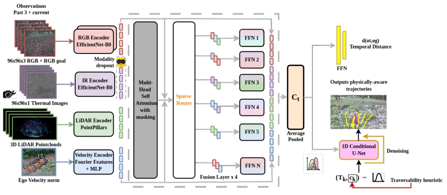
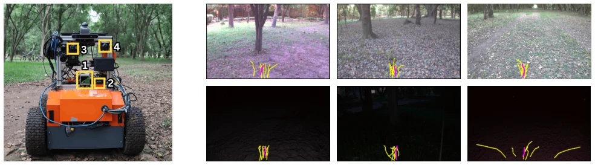

This paper attempts to address the challenges of "what if sensors fail" and "what if it is dark at night" in off-road navigation. MAMMOTH is substantially equipped, incorporating RGB, thermal imaging, point clouds, and velocity, and employs a sparse MoE for fusion. The most remarkable aspect is directly randomly masking modalities during training, enabling the model to learn to "stand on its own". However, can this multi-modal fusion truly withstand all sensor failures in real-world deployment? After all, hardware configuration requirements are high. Moreover, although claimed to be end-to-end, does that IMU-based traversability heuristic count as an implicit "rule injection"? Experiments run on real robots, which is commendable, but is the night performance improvement truly attributable to the model or data augmentation? In short, it is a solid engineering work, but "generalizability" might still be questionable.
Off-road environments are extremely harsh, with large lighting variations, complex terrain, and sensors prone to failure. Existing methods either rely too much on RGB, like ViNT [5] and NoMaD [6], where performance drops significantly at night; or like costmap methods such as SALON [1], HDIF [2], which assume perfect sensors and fail completely once disconnected. Especially at night or low light, RGB fails, and existing E2E strategies lack perception of physical consequences. The authors aim to create a robust strategy that enables visual goal navigation, unguided exploration, and tolerates sensor missing. The core pain point is: existing methods have poor generalization under extreme conditions and lack explicit modeling of terrain physical properties.
Overall it is an end-to-end strategy, inputting historical multi-modal observations and outputting trajectory distributions. The architecture is divided into three steps: first is multi-modal encoding, RGB/Thermal uses EfficientNet, point clouds use PointPillars, velocity uses Fourier features. Then the fusion layer, using sparse MoE (Mixture-of-Experts), each modality has an independent router, dynamically selecting expert networks, achieving selective dependency and collaborative fusion. Next is the diffusion policy head, generating trajectories not only outputs coordinates but also predicts an intrinsic traversability heuristic (based on IMU vertical acceleration PSD). During training, Modality Dropout is used, randomly masking modality tokens, forcing the model to learn cross-modal representations. Loss includes distance prediction, diffusion denoising, and MoE load balancing. Finally, combined with topological memory for long-range planning. This design allows the model to handle arbitrary modality combinations during inference, without needing to reconstruct missing information, significantly reducing computational overhead.

Fig. 1: Model architecture of MAMMOTH. The architecture leverages distinct encoders for RGB, Thermal, 3D pointcloud, and ego velocity inputs. In the fusion layer, a sparse router dynamically selects and fuses features by feeding into expert networks. A diffusion policy then generates physically grounded multi-modal trajectories while a MLP predicts the temporal distance to the goal.
Used TartanDrive 2.0 plus self-built dataset, totaling 9 hours of off-road data, including night and thermal imaging. Tested on Copernicus robot, 5 environments, day/night comparison. Baselines include NoMaD [6], FlowNav [18], etc. Metrics look at CR (Collision Rate), SR (Success Rate), UB (Undesirable Behavior). Results show MAMMOTH performed best at night, CR was 0.6 lower than NoMaD. Ablation experiments prove MoE fusion is better than simple concatenation, Heuristic can significantly reduce UB. Missing modality tests show, even with fewer sensors it can run, but point cloud loss has a large impact on obstacle avoidance. Additionally, the authors compared different expert counts and TopK settings, found 16 experts with Top-4 routing performed best, verifying the rationality of the architecture design.
其他图片Other Figures

Fig. 3: Hardware setup (left) and Visualizing trajectory rollouts (right). Figure (a) shows our hardware setup. Our sensor suite includes Livox Avia LiDAR, Wit IMU JY901, Lucid Vision Labs Triton TRI032S-CC Camera and Trimer TRA L6D ZDN LWIR Camera, indicated by 1,2,3 and 4 respectively. Figure (b) visualizes MAMMOTH’s trajectory rollouts in (left) cluttered, (center) leafy with no clear trails, and (right) clear-trail environments. Top and bottom rows illustrate MAMMOTH’s trajectory rollouts under daylight and low-ambient light conditions, respectively.